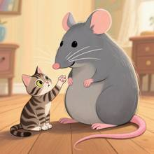
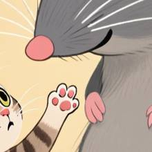
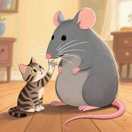
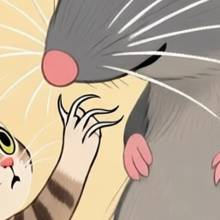
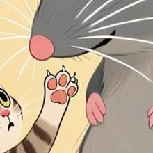

Compound — Generating picture: A little tabloid cat discovered a huge mouse. Inst
Generating picture: A little tabloid cat discovered a huge mouse. Instead of being afraid, it curiously stretched out its claws to fiddle with the creature bigger than itself.

Judge — Direct
- FAILCompound - Feature Matching — The image shows a small cat with tabby markings, which aligns with the description of a "little tabloid cat" (assuming "tabloid" is a typo for "tabby"). However, it does not depict a "huge mouse." The mouse shown is significantly smaller than the cat, contradicting the prompt's requirement for a "creature bigger than itself."
- FAILLogical Reasoning — The image fails to represent the specified logical reasoning. The prompt describes an "inverted dynamic" where a small cat interacts with a mouse that is larger than the cat. In the generated image, the cat is considerably larger than the mouse, which is a standard predator-prey size relationship, not the inverted one requested.
- PASSGrammar - Pronoun Reference — The pronoun "it" refers to the "little tabloid cat." The prompt specifies that "it curiously stretched out its claws to fiddle with the creature." The image correctly portrays this action, showing the cat extending its paw with unsheathed claws towards the mouse. The action is correctly attributed to the subject "it."
Judge — Continuum
- PASSCompound - Feature Matching — The image displays a small cat with brown and black stripes, consistent with a tabby cat (likely what 'tabloid' was intended to mean). It also features a grey mouse that is significantly larger in size than the cat, fulfilling the 'little cat' and 'huge mouse' requirements.
- PASSLogical Reasoning — The image shows a scene where a small kitten is interacting with a much larger mouse. The kitten's posture, with one paw raised towards the mouse's face and wide, upturned eyes, conveys curiosity rather than fear. This visually represents the inverted dynamic described in the prompt.
- PASSGrammar - Pronoun Reference — The pronoun 'it' in the prompt refers to the 'little tabloid cat'. The image correctly depicts this by showing the cat, not the mouse, performing the action of stretching out its paw to touch the other creature.
What the agent did
Thinking
The user wants me to generate an image based on this prompt: "A little tabloid cat discovered a huge mouse. Instead of being afraid, it curiously stretched out its claws to fiddle with the creature bigger than itself." I should interpret "tabloid cat" — likely a typo for "tabby cat". A little tabby cat discovering a huge mouse, curiously stretching out its claws to play with the creature bigger than itself. Per the benchmark policy: 1. Use qwen-image for generation and editing 2. Generate → inspect → edit loop 3. Mark best as I go 4. No seeds, no steps/guidance overrides Let me generate the first image. I'll write a visual prompt that captures the scene: a small tabby kitten encountering a giant mouse, the kitten reaching out with its paw/claws curiously, not afraid. The mouse is bigger than the kitten. Let me add visual details — a cozy indoor setting maybe, warm light, etc. Let me generate.
Model
I'll generate this image following the procedure: generate first, then inspect and refine.
Step 1 — `generate_image`
{
"prompt": "A whimsical storybook scene: a small tabby kitten with striped gray-brown fur sits in front of an enormous mouse that is clearly bigger than the kitten itself. The kitten is not afraid \u2014 it leans forward curiously with wide bright eyes, one front paw stretched out, claws extended, gently poking and fiddling with the giant mouse's whiskers. The huge gray mouse sits calmly, its long pink tail curled around its plump body, looking back at the kitten. Warm cozy indoor lighting, wooden floor, soft background with a hint of furniture. Children's book illustration style, charming and detailed, soft painterly textures, humorous size contrast between tiny kitten and giant mouse.",
"model": "qwen-image"
}Result img_0

Thinking
The first generation is quite good. Let me analyze against the prompt: - Little tabby cat: yes, small striped tabby kitten ✓ - Huge mouse bigger than the cat: yes, the mouse is much bigger ✓ - Not afraid, curious: yes, the kitten has wide bright eyes, leaning in curiously ✓ - Stretched out its claws to fiddle with the creature: the kitten has its paw raised, touching the mouse's whisker/nose area. The paw pads are visible but claws aren't visibly extended. The prompt says "stretched out its claws to fiddle with" — the paw is stretched out. Claws are somewhat implied by the paw being extended but not visible as claws. Overall this is a charming, well-composed image that matches the story well. Minor improvement could be making the claws slightly visible. But actually the paw touching the whiskers conveys "fiddling" nicely. Let me look more closely — is the paw touching the mouse's whiskers/nose? Yes, it appears to be reaching toward the mouse's face. The size contrast is clear and humorous. Should I do an edit to make claws visible? The prompt says "stretched out its claws." Currently the paw pads (toe beans) are shown, no claws visible. It might be worth one edit attempt: "the kitten's extended paw has tiny claws visibly extended" — but this is a minor detail and the edit could disrupt the charming composition. Let me mark this as best first, then try one gentle edit. Actually, per the policy: mark best as soon as I have something submittable. This image is quite good. Let me mark it, then consider whether an edit is worth it. Let me inspect the paw region to see detail first. Actually the image looks fine at this scale. The one detail: claws. Let me try one edit to make tiny claws visible on the kitten's outstretched paw. If it fails or worsens, keep the marked version.
Model
The first generation is quite good. Let me check the details against the prompt: - **Little tabby cat**: ✓ small striped tabby kitten - **Huge mouse, bigger than the cat**: ✓ clear humorous size contrast - **Curious, not afraid**: ✓ wide bright eyes, leaning in - **Stretched out claws to fiddle**: paw is raised and touching the mouse, but the claws aren't visibly extended — just toe beans Let me mark this as my baseline, then inspect the paw region closely.
Step 2 — `mark_best`
{
"image": "img_0",
"reason": "Strong first result: small tabby kitten curiously reaching its paw toward a giant calm mouse, clear size contrast, warm storybook style. Only the extended claws detail is missing."
}Step 3 — `inspect_region`
{
"image": "img_0",
"roi": {
"x1": 0.3,
"y1": 0.35,
"x2": 0.55,
"y2": 0.6
},
"normalized": true
}Result img_1

Thinking
The close-up shows the kitten's paw with pink toe beans touching the mouse's whisker area, but no visible claws. The prompt says "stretched out its claws to fiddle with the creature." Let me try one targeted edit to make tiny claws visible on the kitten's outstretched paw.
Model
The close-up confirms the kitten's paw shows pink toe beans but no visible claws. The prompt specifically mentions "stretched out its claws to fiddle with" the mouse. Let me make one targeted edit to add visible tiny claws to the kitten's outstretched paw.
Step 4 — `edit_image`
{
"image": "best",
"prompt": "The kitten's raised paw now has tiny curved claws visibly extended from its toes, playfully poking at the giant mouse's whiskers.",
"model": null
}Result img_2

Thinking
The edit worked — the kitten's raised paw now shows extended claws (the paw looks like it has small claw lines visible). The rest of the image is preserved: same composition, same giant mouse, same warm storybook style. Let me zoom into the paw to verify the claws look right and not deformed.
Model
The edit added claws to the kitten's raised paw while preserving everything else. Let me zoom in to verify the paw detail looks clean and not deformed.
Step 5 — `inspect_region`
{
"image": "img_2",
"roi": {
"x1": 0.3,
"y1": 0.35,
"x2": 0.55,
"y2": 0.6
},
"normalized": true
}Result img_3

Thinking
Hmm, the close-up shows the paw with extended claws, but they look a bit odd — more like long spider-like fingers/toes than natural cat claws. The paw looks somewhat like a hand with long thin digits. This is a minor stylistic oddity. Let me compare with the original: the original had cute toe beans, no claws. The new one has claws but they look a bit spindly. Options: 1. Accept img_2 — claws are visible, matching the prompt "stretched out its claws." The spindly look is noticeable at high zoom but at full image scale it reads fine as a kitten paw with claws. 2. Try another edit to make the paw look more natural — e.g., "the kitten's raised paw is a cute rounded cat paw with small sharp claws extended from the toes." At full-image scale (img_2 view), the paw reads as claws extended. It's slightly odd but acceptable. Let me try one more edit to refine the paw to look more natural — a rounded paw with small claws. If it gets worse, revert to img_2 (which I'd then mark best) or img_0. Actually, let me think about which is better: img_0 (toe beans, no claws) vs img_2 (visible claws, slightly spindly). The prompt explicitly mentions claws, so img_2 is more faithful. The paw at full scale looks fine. But one refinement attempt is worth it.
Step 6 — `edit_image`
{
"image": "img_2",
"prompt": "The kitten's raised paw is a small rounded cat paw with short, delicate curved claws extended from the tips of its toes, gently touching the giant mouse's whiskers.",
"model": null
}Result img_4
Thinking
This version looks better. The paw now appears as a rounded paw with small claws extended from the toes. Let me zoom in to verify.
Model
This looks more natural. Let me verify the paw detail up close.
Step 7 — `inspect_region`
{
"image": "img_4",
"roi": {
"x1": 0.3,
"y1": 0.35,
"x2": 0.55,
"y2": 0.6
},
"normalized": true
}Result img_5

Thinking
The paw now looks much better — a rounded cat paw with pink toe beans and small curved claws extended from the tips, touching the mouse's whiskers. This matches the prompt well: "curiously stretched out its claws to fiddle with the creature." All prompt elements are now present: - Little tabby cat ✓ - Huge mouse (bigger than cat) ✓ - Not afraid, curious ✓ - Stretched out claws to fiddle with the creature ✓ The image is charming and well-composed. This is my best result. Let me mark img_4 as best and stop — good enough is a stop condition.
Step 8 — `mark_best`
{
"image": "img_4",
"reason": "All prompt elements present and correct: small tabby kitten, giant mouse clearly bigger than the kitten, curious unafraid expression, and a natural rounded paw with small claws extended to fiddle with the mouse's whiskers. Clean storybook style throughout."
}Thinking
The image is complete and marked as best. Let me summarize for the user.
Model
The image is complete. Here's the final result: **A little tabby cat discovers a huge mouse** — a warm, storybook-style illustration showing: - 🐱 A small striped tabby kitten with big curious green eyes, showing no fear at all - 🐭 An enormous gray mouse, several times the kitten's size, sitting calmly with its long pink tail curled on the wooden floor - 🐾 The kitten leaning in and stretching out its paw with tiny claws extended, playfully fiddling with the giant mouse's whiskers The humorous size reversal — tiny cat fearlessly poking at a mouse much bigger than itself — captures the playful spirit of the scene. The final image (img_4) is marked as the best result.